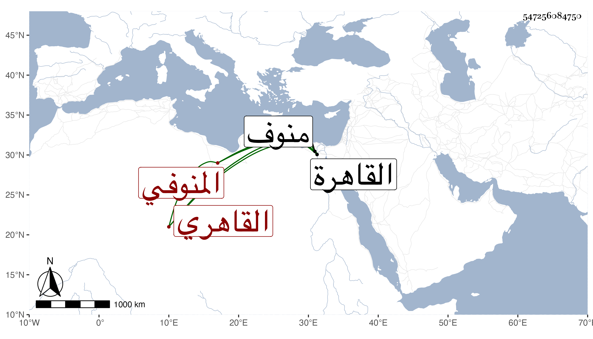

0902Sakhawi.DawLamic.ITO20230111-ara1.EIS1600.547256084750
Biography ID: 547256084750
211
محمد بن موسى بن يوسف بن موسى بن يوسف المحب بن الشرف المنوفي القاهري الآتي أبوه . ولد في يوم السبت مستهل المحرم سنة خمسين بالقاهرة ونشأ فحفظ القرآن والمنهاج وألفية النحو وعرض واشتغل قليلا عند الفخر المقسي والبكري وتنزل في الجهات وتكسب بالشهادة في الجورة مع أبيه وبعده وأثرى منها بحيث زادت نهمته في تحصيل الجهات وخطب نيابة بمدرسة سودون من زاده وبالزمامية وغيرهما مع استقراره في خطبة الجامع الكبير بمنوف وشاع ما افتعله رفيقا للشرف بن روق حين كان رفيقا له في الشهادة من أشهاد علي خادم البيبرسية حين كان مريضا برغبته لهما عما بيده من وظيفتي التصوف والخدامة وسعيا في أخذ خطابتها فبلغ الخادم ذلك فأنرك وقوعه منه وأشيع إنكاره فطلب منهما الإشهاد عليه فأخفياه ومزقاه فيما قيل وكانت واقعة شنيعة . وطمحت نفسه لقضاء منوف فسعى عند الزين زكريا أول ولايته وأفحش في زيادة ما يحمل باسم الحرمين كل سنة حين وربما حضر عندي في البرقوقية وكان ساكنا . مات في جمادى الأولى سنة اثنتين وتسعين ودفن عند أبيه بحوش سعيد السعداء وترك أولادا رحمه الله .
